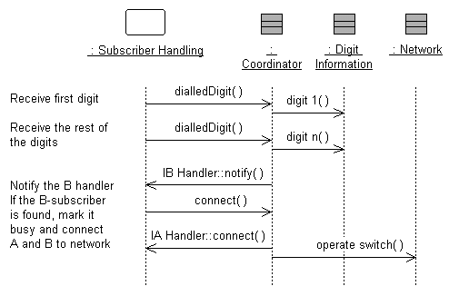

|
Purpose
|
To specify the internal behavior of the subsystem.
To identify new design classes or design subsystems needed to satisfy subsystem
behavioral requirements.
|
The external behavior of a subsystem is primarily defined by the interfaces it realizes. When a subsystem realizes an
interface, it makes a commitment to support each and every operation defined by the interface. The operation may be in
turn realized by an operation on a design element (i.e., Design Class or Design Subsystem) contained by the subsystem; this operation may
require collaboration with other design elements
The collaborations of model elements within the subsystem should be documented using sequence diagrams which show how
the subsystem behavior is realized. Each operation on an interface realized by the subsystem should have one or more
documenting sequence diagrams. This diagram is owned by the subsystem, and is used to design the internal
behavior of the subsystem.
If the behavior of the subsystem is highly state-dependent and represents one or more threads of control, state
machines are typically more useful in describing the behavior of the subsystem. State machines in this context are
typically used in conjunction with active classes to represent a decomposition of the threads of control of the system
(or subsystem in this case), and are described in statechart diagrams, see Guideline: Statechart Diagram. In real-time systems, the behavior of  Artifact: Capsules will also be described using state machines.Within the subsystem, there may
be independent threads of execution, represented by active classes. Artifact: Capsules will also be described using state machines.Within the subsystem, there may
be independent threads of execution, represented by active classes.
In real-time systems, Artifact: Capsules will be used to encapsulate these threads.
Example:
The collaboration of subsystems to perform some required behavior of the system can be expressed using sequence
diagrams:

This diagram shows how the interfaces of the subsystems are used to perform a scenario. Specifically, for the Network
Handling subsystem, we see the specific interfaces (ICoordinator in this case) and operations the subsystem must
support. We also see the NetworkHandling subsystems is dependent on the IBHandler and IAHandler interfaces.
Looking inside the Subsystem, we see how the ICoordinator interface is realized:

The Coordinator class acts as a "proxy" for the ICoordinator interface, handling the interface operations and
coordinating the interface behavior.
This "internal" sequence diagram shows exactly what classes provide the interface, what needs to happen internally to
provide the subsystem's functionality, and which classes send messages out from the subsystem. The diagram clarifies
the internal design, and is essential for subsystems with complex internal designs. It also enables the subsystem
behavior to be easily understood, hopefully rendering it reusable across contexts.
Creating these "interface realization" diagrams, it may be necessary to create new classes and subsystems to perform
the required behavior. The process is similar to that defined in Use Case Analysis, but instead of Use Cases we are
working with interface operations. For each interface operation, identify the classes (or in some cases where the
required behavior is complex, a contained subsystem) within the current subsystem which are needed to perform the
operation. Create new classes/subsystems where existing classes/subsystems cannot provide the required behavior (but
try to reuse first).
Creation of new design elements should force reconsideration of subsystem content and boundary. Be careful to avoid
having effectively the same class in two different subsystems. Existence of such a class implies that the subsystem
boundaries may not be well-drawn. Periodically revisit Task: Identify Design Elements to re-balance subsystem responsibilities.
It is sometimes useful to create two separate internal models of the subsystem - a specification targeted to the
subsystem client and a realization targeted to the implementers. The specification may include "ideal" classes and
collaborations to describe the behavior of the subsystem in terms of ideal classes and collaborations. The realization,
on the other hand, corresponds more closely to the implementation, and may evolve to become the implementation.
For more information on Design Subsystem specification and realization, see Work Product Guideline: Design Subsystem, Subsystem Specification and Realization.
|